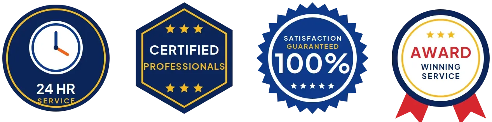
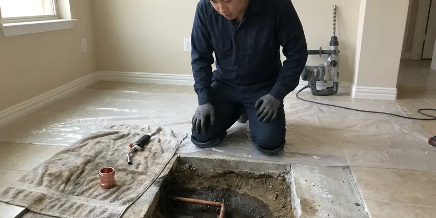
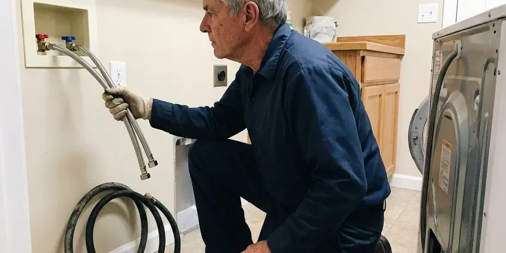
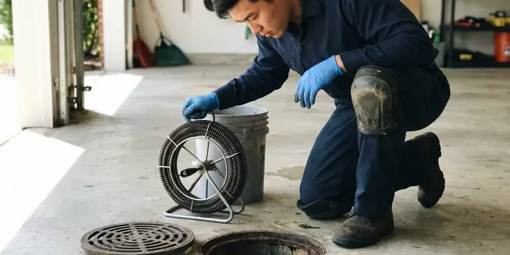

Trenchless Sewer Line Repair in West Haven, CT
For homeowners in West Haven, CT, our trenchless sewer line repair service offers a less invasive way to fix damaged pipes without extensive excavation.
- Durable Solutions
- Fast Camera Inspections
- No Major Trenching
- Quick, Non-Invasive Repair

Need Trenchless Sewer Line Service in West Haven, CT?
Our team provides reliable and effective trenchless solutions for your home's plumbing.
Trusted Trenchless Sewer Line Repair in West Haven, CT
Our team at GLV Plumbing is equipped with the latest technology for trenchless sewer line repair, offering a faster, cleaner and often more cost-effective solution for residents in West Haven, CT.
Our expertise includes:
- Epoxy cured-in-place lining and sectional point repair patches
- High-resolution sewer camera inspection with depth and location tracking
- Static and pneumatic pipe bursting with new HDPE pipe

Additional Plumbing Repair Services in West Haven, CT
We offer expert plumbing repair services across West Haven, CT to stop leaks, clear blockages, and keep every fixture working the way it should.


Water Heater Repair near West Haven


Customers
Why Choose GLV Plumbing for Trenchless Sewer Line Repair in West Haven, CT?
Choosing trenchless sewer repair means avoiding the major disruption and cost that come with traditional excavation methods. We prioritize solutions that protect your property while resolving critical plumbing issues.
- Minimal Disruption, We fix your sewer lines with only one or two small access points, sparing your lawn and hardscapes.
- Durable Fix, The new pipes or liners installed are often more resilient to common issues like root intrusion and corrosion.
- Video Proof, You see the damage before the repair and the finished pipe afterward.
Citywide Coverage
GLV Plumbing proudly serves every neighborhood in West Haven, so no matter where you are located, our expert trenchless sewer line repair services are readily available. We understand the plumbing challenges across West Haven and are prepared to address them efficiently.
Experienced Team
Our trenchless crew is trained on lining, point repair and bursting systems and has rehabilitated many residential sewer lines. They know how to prep pipe properly so liners bond and last.
Safety-First Approach
Any digging starts with an 811 call so buried utilities are marked before we break ground. Access pits are shored and barricaded while in use.
Trusted Certified West Haven Plumbing Services Professionals
At GLV Plumbing, we take pride in providing licensed, certified plumbing services throughout West Haven, CT. Backed by recognized industry credentials, our experienced plumbers combine technical skill with genuine customer care. Whether it is repair, installation, or maintenance, we follow strict safety and quality standards to deliver lasting results you can trust.
Call Us Now PHCC Plumbing Contractor Recognition
PHCC Plumbing Contractor Recognition Better Business Bureau (BBB) Accreditation
Better Business Bureau (BBB) Accreditation Angi Certified Pro
Angi Certified Pro ISO 9001 Quality Management Certification
ISO 9001 Quality Management CertificationAdvanced Trenchless Sewer Line Repair Services in West Haven, CT
Pipe Bursting Sewer Repair in West Haven
Pipe bursting is a trenchless method where a new pipe is pulled through the old one while the old pipe is fractured outward. This creates a new, seamless and often larger diameter sewer line without the need for extensive trenching. It is ideal for severely damaged or collapsed pipes in West Haven that require full replacement rather than just relining.

Trenchless vs Traditional Sewer Repair Cost in West Haven, CT
Point repairs often cost $1,500 to $3,500, while full lining of a residential lateral commonly runs $4,000 to $12,000 depending on length and diameter. Pipe bursting typically ranges from $5,000 to $15,000. Traditional excavation can be cheaper upfront on short, shallow runs, but restoring concrete and landscaping can quickly close the gap. We price both options so you can decide.
Perma-Liner and NuFlow Trenchless Technologies in West Haven
GLV Plumbing uses industry-leading trenchless technologies from trusted brands like Perma-Liner and NuFlow. These systems are known for their durability, effectiveness and adherence to plumbing standards. Using these materials and equipment means your trenchless sewer line repair in West Haven is not only low impact but also a high-quality, long-lasting solution, backed by manufacturer warranties.
Sewer Line Video Inspection in West Haven
Before any trenchless repair, we conduct a thorough video inspection of your sewer line. This involves inserting a high-resolution camera into the pipe to accurately diagnose the problem's exact location and nature. This crucial step makes sure we choose the most appropriate and effective trenchless method for your West Haven property, avoiding guesswork.
Cast Iron Sewer Line Repair in West Haven, CT
Cast iron drains and sewer lines corrode from the inside, leaving rough scale, cracks and channel rot along the bottom of the pipe. We descale the pipe with chain knockers or cutters, then line it to restore a smooth, sealed interior. This is particularly useful for cast iron running under slabs where excavation is costly. Lining can add many years of service.
Commercial Trenchless Sewer Line Repair in West Haven, CT
For businesses in West Haven, CT, minimizing disruption is essential. Our commercial trenchless sewer line repair services offer a discreet and efficient way to address sewer issues without impacting business operations or customer access. Whether it is a restaurant, office building or retail space, we provide robust trenchless solutions that restore sewer function quickly, so your business can keep operating smoothly.
Orangeburg and Clay Pipe Repair in West Haven
Some older homes still have Orangeburg fiber pipe or vitrified clay sewer laterals. Orangeburg flattens and blisters over time, while clay cracks and separates at joints. Pipe bursting is often the best option for Orangeburg, and lining can work well for clay that still holds its shape. We determine the material on camera before recommending a method.

Sewer Camera Inspections for Trenchless Repair in West Haven
Before any trenchless repair, a detailed sewer camera inspection is crucial. Our high-definition cameras travel through your sewer lines, providing real-time video of the pipe's interior. This allows us to precisely diagnose the problem, identify its exact location and determine the most appropriate trenchless method, whether it is pipe bursting or CIPP. This diagnostic step makes for a precise and lasting repair in West Haven.
Trenchless Sewer Line Repair Near Me in West Haven, CT
Our team is always ready to head out to your location, offering the latest in trenchless technology. We understand the local infrastructure and common issues affecting sewer lines in West Haven, delivering a targeted and effective repair every time.
When you search for 'trenchless sewer line repair near me' in West Haven, CT, GLV Plumbing is your local expert. We are well positioned to provide rapid response and efficient service to all residents, so your sewer line issues are addressed promptly.
GLV Plumbing at a Glance
- Fully licensed plumbing team covering West Haven, CT
- Same-day appointments and 24/7 emergency response
- Upfront, flat-rate pricing before work begins
- 4.8-star rated by 946+ Connecticut customers
West Haven Map
West Haven Information
- Population
- 54,790
- Area codes
- 203/475/860
- Service area
- West Haven and communities within 40 miles
- Nearby
- New Haven, Milford, Bridgeport, Waterbury
High water tables in low-lying areas of Connecticut can push groundwater into basements during wet seasons and strain sump pumps. For homes in West Haven, CT, trenchless sewer line repair protects underground pipes from shifting ground and saves established landscaping from disruptive excavation.
Expert Services
Trust our professionals for reliable GLV Plumbing solutions in West Haven, CT.
Our Specialized Plumbing Services in West Haven, CT
At GLV Plumbing, we provide a complete range of plumbing services across West Haven, CT. From leak detection to full system installations, our team ensures fast, precise, and affordable service for both residential and commercial properties. Explore our core services below:

West Haven plumbing repair specialists



Drain Services near West Haven
How Our Trenchless Sewer Line Repair Process Works in West Haven, CT
Here is a simple breakdown of how GLV Plumbing handles trenchless sewer line repairs in West Haven, CT.
Request a Quote
Call (860) 487-7330 to schedule a sewer camera inspection. We record the video and mark any problem spots from the surface.
Review Repair Options
We walk you through the footage and explain whether lining, point repair or bursting fits your line. You receive a written price for each suitable option.
Repair and Verify
We clean and prep the line, complete the trenchless repair and restore any access points. A final camera inspection verifies the new pipe is sound.
Frequently Asked Questions About Trenchless Sewer Line Repair in West Haven
Point repairs usually cost $1,500 to $3,500. Full lining often runs $4,000 to $12,000, and pipe bursting typically ranges from $5,000 to $15,000 depending on length, depth and access. We price your job after a camera inspection.
A rented snake may temporarily clear a clog, but it will not fix cracks, offsets or roots. Repeated DIY clearing can also damage fragile pipe, so a camera inspection is the smarter first step.
High water tables in low-lying areas of Connecticut can push groundwater into basements during wet seasons and strain sump pumps. Soils that shift with changes in moisture can put significant stress on underground pipes, leading to cracks, breaks and misalignments. Trenchless methods, especially pipe bursting with flexible HDPE pipe, are highly effective at reducing future damage caused by soil movement.
Most trenchless sewer line repairs can be completed in one to three days, depending on the scope and method. This is significantly faster than traditional excavation methods, which can often take a week or more plus additional time for property restoration.
Trenchless sewer line repairs are designed for the long haul. Cured-in-place pipes and new pipes installed via pipe bursting are very durable, often lasting 50 years or even longer. Many manufacturers offer warranties exceeding 25 years on their materials.
Most trenchless sewer line repairs can be completed in one to three days, much faster than traditional excavation methods, which can take a week or more. The exact timeline depends on the length of the pipe, the severity of the damage and the specific trenchless technique used.
The primary advantages include minimal disruption to your property, faster completion times and often a more durable repair thanks to new materials like HDPE pipe or epoxy liners. You save on landscaping and restoration costs, which can be significant in West Haven.
Yes. Our trenchless repairs come with a written warranty on workmanship, and liner materials carry manufacturer coverage. We explain the terms before you sign.
What People Are Saying About Our Plumbing Experts?
Emily R.
I called GLV Plumbing for plumbing repair, and the technician was fast, polite, and thorough. They explained the problem clearly and fixed it the same day. I will definitely hire them again. Highly recommended!
Plumbing Repair · New Haven, CT
Laura S.
I scheduled a water heater replacement, and the team made the process smooth and affordable. The new unit works perfectly, and they cleaned up after completing the job.
Water Heater Replacement · Meriden, CT
Daniel K.
A pipe burst at 11 pm and they actually answered. The plumber showed up within the hour, shut everything down, and had us back to normal the next morning. Could not ask for more.
Emergency Plumbing · Milford, CT
Mark T.
When our office needed drain cleaning, GLV Plumbing provided quick, reliable service. The plumber arrived on time and made sure every drain flowed perfectly before leaving. Very satisfied.
Drain Cleaning · West Haven, CT
Robert G.
The trenchless sewer replacement saved our front yard. They walked us through the camera inspection footage first so we knew exactly what we were paying for.
Sewer Line Replacement · Waterbury, CTSofia M.
Two new toilets installed in one visit, no mess left behind, and the tech even adjusted a faucet he noticed was dripping. Fair pricing and really friendly.
Toilet Installation · Waterbury, CT